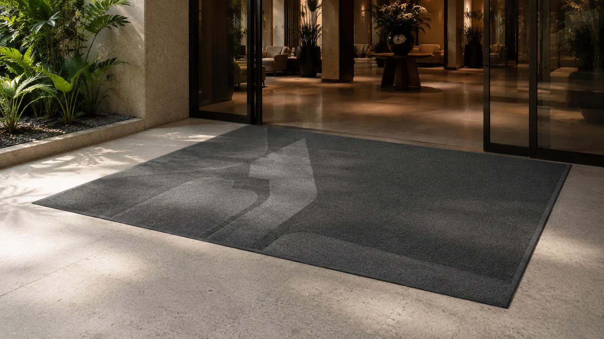

schön & sauber – Werbe-Design-Matten
Die FUCHSIUS multi-media GmbH liefert, konfektioniert und betreut Schmutzfangmatten für Eingänge, Objekte und Gewerbe – seit über 40 Jahren.
Seit über 40 Jahren am Markt
Seit über 40 Jahren sind wir mit gestalteten und einfarbigen Schmutzfangmatten am Markt und haben inzwischen Produkte nahezu aller namhaften Hersteller im harten Einsatz beim Kunden getestet.
Wir wissen, wovon wir reden, da wir unsere Erfahrungen gesammelt haben, lange bevor in Deutschland irgend ein anderer Lieferant gestaltete Schmutzfangmatten mit individuellem Design, Größen, Formen – mit und ohne umlaufenden Gummirand – auch bündig eingepaßt in Rahmen, Eingängen, Liften, geliefert hat.

Wer wir sind
Im Folgenden möchte sich die FUCHSIUS multi-media GmbH näher vorstellen. Wir sind Lieferant von Matten als Schmutzfänger und bieten vollen Mattenservice. Zu unserem Sortiment gehören Fussmatten, Antirutschmatten, Rutschmatten, Eingangsmatten, Schuhabtreter, Fussabstreifer, sowie eine Sauberlaufmatte, Werbematte und Schmutzfangmatte. Wir sind darüber hinaus ein Fussmattenservice aus München, der eine Mattenvermietung und einen Schmutzfangmatten-Mietservice anbietet. Unser Mattenservice schließt auch die Teppichbodenreinigung und Schmutzfangmatten Service-Reinigung mit Kleen-Tex Matten, Cleantex, EMCO-Matten und Jobet-Matten ein.
Suchen Sie nach individuellen Matten für ihren Hauseingang? Ob Antirutschmatten, Eingangsmatten, Fussabstreifer, Fussmatten, Rutschmatten, Schmutzfangmatte, Sauberlaufmatte, Schuhabtreter oder Werbematte – bei uns finden Sie den richtigen Schmutzfänger. Als Ihr Fussmattenservice aus München bieten wir auch eine Mattenvermietung und einen Schmutzfangmatten-Mietservice an. Unser Mattenservice umfasst auch eine Schmutzfangmatten Service-Reinigung und Teppichbodenreinigung mit Hilfe von RDT-Produkten. Nutzen Sie unsere langjährige Erfahrung im Mattenservice.
Wenn Sie mehr über unsere Schmutzfänger-Matten und unseren Fussmattenservice aus München erfahren wollen, sprechen Sie uns an. Unser Kundendienst vom Mattenservice steht Ihnen gern mit Rat und Tat zur Seite.
Für die Besten das Beste von den Besten
Hängen Sie sich einen Diamanten am Schnürsenkel um den Hals? Sicher nicht! Wieso sollte dann eine häßliche, nichtssagende Matte besser in Ihren, mit viel Aufwand gestalteten Eingang passen, als eine individuell Ihrem Interieur angepaßte, aussagekräftige Design-Matte.
Unser Ziel
Wir möchten, daß Ihre Kunden schon beim ersten Betreten Ihres Hauses begeistert sind und Ihren guten Namen in bester Erinnerung behalten. schön & sauber
Vertrieb
Wir sind in allen größeren Regionen in Deutschland vertreten durch langjährig tätige Firmen aus den Bereichen der Teppichboden- und Teppich-Reinigung sowie aus dem Objektbereich.
Firmendaten
| Firma | FUCHSIUS multi-media GmbH |
|---|---|
| Marke | Der Mattenfuchs-Shop |
| Vertreten durch | Dipl.-Ing. FH Dieter Fuchsius |
| Anschrift | Fischerstrasse 2, D-85737 Ismaning |
| Telefon | +49 89 54 55 82 64 |
| Mobil / Hotline | +49 171 77 55 400 |
| Fax | +49 89 54 88 83 33 |
| info@matten.de | |
| Registergericht | Amtsgericht München HRB 161064 |
| USt-IdNr. | DE 246 769 029 |
Über 35 Jahre Erfahrung, über 40 Jahre am Markt mit gestalteten Schmutzfangmatten. Ausführliche Angaben finden Sie im Impressum.
Kundenstimmen
„Gute Beratung, gerade bei komplizierten baulichen Konstellationen oder Sonderwünschen in puncto Handhabung und Haltbarkeit. Und der guten Qualität entsprechend faire Preise.“
„Vielen Dank für den tollen Service! Die Aluminium-Profil-Fußmatte wurde meinen Wünschen (Materialkombination, Farbe und Größe) entsprechend angefertigt und schnell versandt und übertraf meine Erwartungen!“
„Ein Unternehmen, in dem man noch weiß, was Dienstleistung heißt. Das ist der Firma Mattenfuchs-Shop super gut gelungen.“
„Sehr guter persönlicher Service, hervorragende Qualität, Preis-Leistungs-Verhältnis ist top. Immer wieder zu empfehlen. Danke!“
„Toller Service, beste Qualität und schnelle Lieferung.“
„Suchte eine Fußmatte für einen eingelassenen Einbaurahmen mit exotischen Maßen. Bei Mattenfuchs gar kein Problem: Größe und Dicke passen perfekt!“
„Unsere Matte für die Terrasse sollte ein ausgefallenes Maß haben. Diese Firma hat uns vom ersten Auftritt an eines Besseren belehrt!“
„Hab seit Langem eine Matte für meinen Hauseingang gesucht, nie das Richtige gefunden. Doch bei matten.de war ich hoch zufrieden: Sie lieferten die Matte genau nach meinen Angaben und sehr schnell.“
„Tolle Beratung, absolut fachkundig und freundlich. Unkomplizierte Abwicklung, gute und schnelle Fertigung und Lieferung.“
„Vielen Dank für die gute Beratung und den kompletten, kompetenten Service — eine super Matte, wertet den Trainingsbereich auf.“
„Klaglose Abwicklung! Absolute Weiterempfehlung! Besonders positiv aufgefallen: die vielen informativen Erläuterungen.“
„Wir haben eine Matte aus Kokosvelour bei dieser Firma bestellt. Wir sind sehr zufrieden mit der Abwicklung und mit der Qualität der Ware.“
„Von der Bestellung über die Herstellung bis zur Lieferung alles prima gelaufen. Die Ausführung bzw. Qualität der Fußmatte ist hervorragend.“
„Wir wollten eine große, farbige Fußmatte nach Maß für unseren Flur als Schmutzfang. Dank guter Beratung erhalten wir ein hochwertiges Produkt zu gutem Preis.“
„Der Kontakt mit dem Mattenfuchs war nett und problemlos: gute Beratung und einwandfreie Lieferung. Eine klare Empfehlung!“
„Ein überaus freundlicher Kontakt bei einer Rückfrage, unkomplizierte und schnelle Abwicklung und eine passgenaue und sehr gute Ware.“
„Ich kenne mich mit dem Thema Fußmatten nicht aus, deswegen erwarte ich eine informative Webseite. All das habe ich hier bekommen.“
„Sehr fachkundige und freundliche Beratung, schnelle Fertigung und Lieferung. Sehr guter Service, vielen Dank dafür.“
„Hervorragender Service und schnelle Lieferung!“
„Beide Bestellungen wurden schnell und zuverlässig ausgeführt. Tolle Kommunikation und hochwertige Warenqualität. Vielen Dank!“